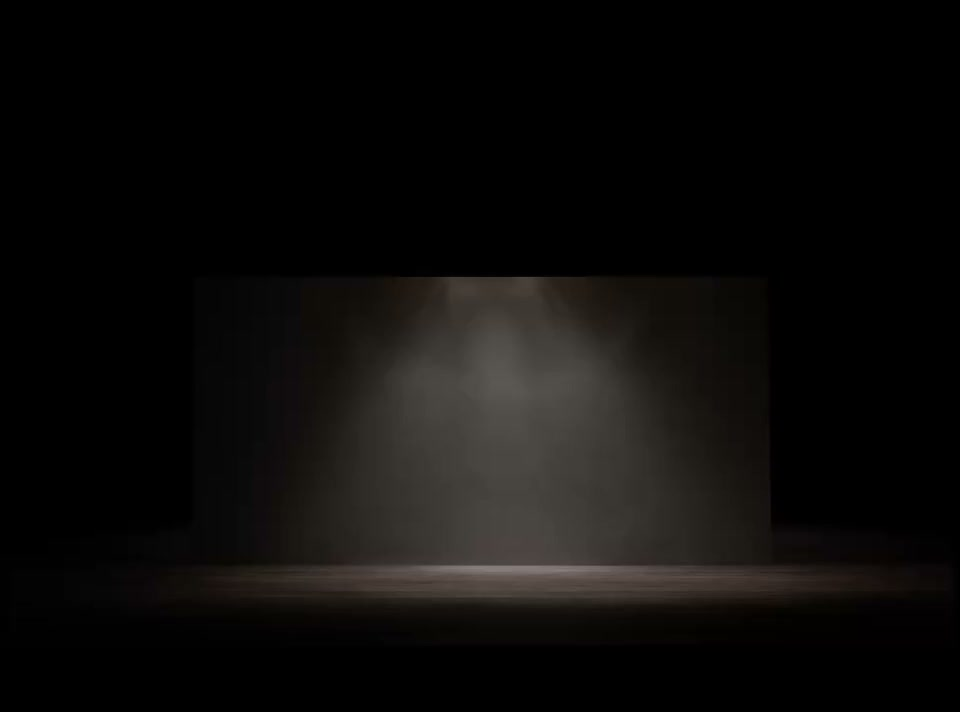

Works
The Stage — Acts of a Lucid Silence
A trilogy of 1/1 video works on a bare stage. Each act stages a single emotional state, present from the first frame, isolated from its cause.
-

Act I I Have To -
 Act II
I Could
Act II
I Could
- Act III I Don't